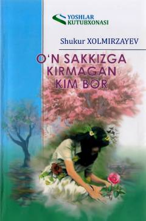

OSShukur Xolmirzayevning insoniy kechinmalarga boy ta'sirli qissasi.
Ushbu qissa taniqli yozuvchi Shukur Xolmirzayev qalamiga mansub bo'lib, unda inson hayotining murakkab va ta'sirli lahzalari aks ettirilgan. Asar qahramonlarning ichki kechinmalari va hayotiy iztiroblari orqali o'quvchini chuqur mushohadaga chorlaydi.